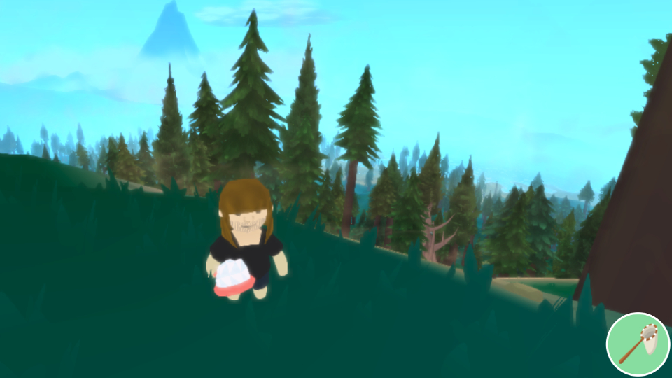

Mikołaj Hanslik
Play

Frinlet
Animal crossing z proceduralnie generowanym światem. Różnorodne biomy, fauna, flora, miasta, pojazdy i ogrom przestrzeni. Gra stworzona używając webGL.
Pomagałem przy designie, stworzyłem modele zwierząt oraz niektórych budynków.